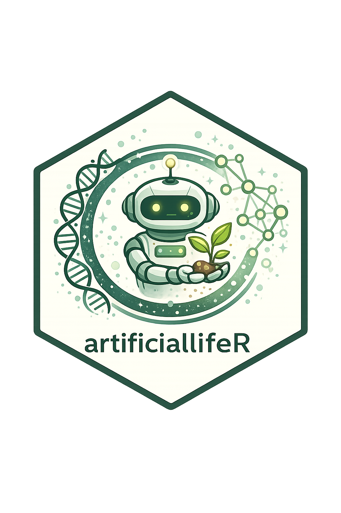

artificialLifeR is an educational R package for simulating, visualizing, and explaining simplified artificial-life models.
The package focuses on agents, resources, reproduction, mutation, selection, population dynamics, and life-like organization. It combines R functions, core tutorials, and a detailed theory guide to help learners explore how life-like patterns can arise from local interaction, variation, inheritance, and environmental constraints.
Overview
Artificial life studies how life-like processes can be modeled, simulated, and understood using artificial systems. These systems may include agents, cellular automata, evolving populations, digital organisms, or simplified ecological worlds.
artificialLifeR is designed for teaching, conceptual exploration, science communication, and academic portfolio development.
The central idea is:
Life-like organization can be explored through simplified models of agents, resources, reproduction, mutation, selection, and population change.
Main features
The package provides educational toy simulations for:
- agent creation and variation;
- resource competition;
- reproduction and inheritance;
- mutation and trait variation;
- selection and fitness-based survival;
- population dynamics;
- life-like complexity summaries;
- visualization of artificial-life outputs.
Important note
This package does not fully model real biological life, real evolution, real ecosystems, real cognition, or consciousness.
The models are simplified educational abstractions. They are designed to help users understand concepts such as agents, resources, traits, reproduction, mutation, selection, adaptation, and population-level change.
It is better to say:
The simulations illustrate life-like dynamics in simplified artificial systems.
than:
The simulations create or fully explain life.
Installation
You can install the development version from GitHub:
if (!requireNamespace("remotes", quietly = TRUE)) {
install.packages("remotes")
}
remotes::install_github("NoushinN/artificialLifeR")Then load the package:
Quick example
Create a population of simple agents:
library(artificialLifeR)
agents <- create_agents(
n_agents = 50,
seed = 1
)
head(agents)Simulate resource competition:
competition <- simulate_resource_competition(
n_agents = 50,
steps = 40,
resource_regen = 0.20,
seed = 2
)
head(competition)Plot average energy over time:
summary_energy <- aggregate(
energy ~ step,
data = competition$agents,
FUN = mean
)
plot_alife_sim(
summary_energy,
x = "step",
y = "energy",
type = "line"
)Summarize life-like complexity:
measure_life_like_complexity(
competition$agents,
trait_col = "energy",
time_col = "step"
)Package structure
| Section | Purpose |
|---|---|
| Reference | Formal documentation for each R function |
| Core Tutorials | Step-by-step examples showing how to run, visualize, compare, and interpret simulations |
| Theory Guide | Deeper conceptual chapters explaining artificial life, agents, resources, reproduction, mutation, selection, complexity, and responsible use |
Core functions
| Function | Purpose |
|---|---|
create_agents() |
Creates a simple artificial population with traits and energy |
simulate_resource_competition() |
Simulates agents competing for spatially distributed resources |
simulate_reproduction() |
Simulates reproduction based on energy and inheritance |
simulate_mutation() |
Applies mutation to numeric traits |
simulate_selection() |
Applies fitness-based selection to a population |
simulate_population_dynamics() |
Simulates population change under birth, death, resources, and mutation |
measure_life_like_complexity() |
Computes simple diversity, entropy, variability, and temporal-change summaries |
plot_alife_sim() |
Visualizes artificial-life simulation outputs |
Core tutorials
The Core Tutorials provide practical, code-focused walkthroughs.
They show how to:
- create agents;
- simulate resources and competition;
- simulate reproduction and mutation;
- simulate selection;
- simulate population dynamics;
- summarize outputs with
measure_life_like_complexity(); - visualize model outputs;
- interpret simulations responsibly.
Theory guide
The Theory Guide provides deeper conceptual background for the package.
It explains topics such as:
- what artificial life is;
- agents, environments, and local rules;
- resources, metabolism, and constraint;
- reproduction and inheritance;
- mutation, variation, and novelty;
- selection and adaptation;
- population dynamics;
- artificial life, emergence, and origin-of-life research;
- artificial life and consciousness debates;
- limitations and responsible use.
Suggested use
This package may be useful for:
- teaching artificial life and complexity;
- introducing simulation-based thinking;
- demonstrating simplified evolutionary processes;
- supporting theory discussions about life, emergence, cognition, and AI;
- building an academic or technical portfolio;
- creating examples for science communication.
Responsible interpretation
The simulations in this package are toy models. Their purpose is conceptual clarity, not realism.
The package does not claim to:
- create real life;
- fully explain biological evolution;
- simulate real ecosystems;
- model consciousness directly;
- replace empirical biological or ecological models.
Instead, it helps users explore how life-like dynamics can arise in simplified artificial systems.
Documentation
The full package website is available here:
https://noushinn.github.io/artificialLifeR/
The source code is available here:
Related projects
This package complements educational projects on origin of life, emergence, complexity, consciousness, and artificial intelligence.
| Project theme | Relationship |
|---|---|
| Origin of life | Artificial-life models help explore how life-like organization may arise from simple processes |
| Emergence | Artificial life shows how system-level patterns arise from local interaction and selection |
| Consciousness theories | Artificial life provides careful context for debates about life-like and mind-like artificial systems |
| Complexity science | Artificial life connects agents, resources, feedback, variation, and population dynamics |
Citation
If referencing this project, please cite: Nabavi, N. artificialLifeR: An Educational R Package for Simulating Simplified Artificial-Life Dynamics DOI